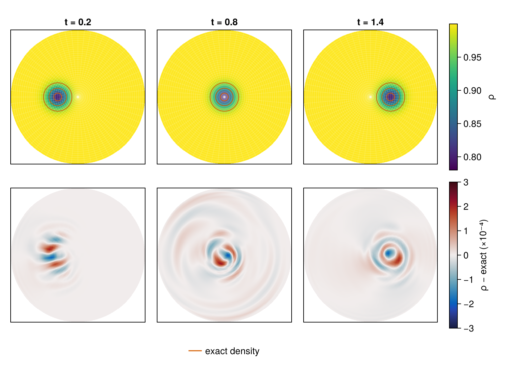
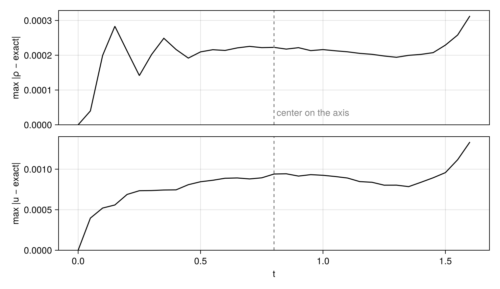

Axis-crossing vortex
The axis of a cylindrical grid is a singularity of the coordinates, not of the flow. There the radial lines meet, the spacing between them shrinks to zero, and the radial and azimuthal directions turn with the angle. A flow crossing the axis should notice none of this.
An isentropic vortex carried by a uniform stream makes the check exact. Its swirl is balanced by a pressure deficit at its core, so in an inviscid gas it travels with the stream without changing shape: the solution at time $t$ is the initial vortex translated by $U t$. Shu (1998) used it to test high-order schemes on Cartesian grids. This tutorial carries it along a diameter of a disk, straight across the axis, and compares the calculation with the translated vortex before, during and after the crossing.
using CompactLES # re-exports MPI
MPI.Initialized() || MPI.Init(threadlevel=:funneled)
using CairoMakie
using Printf
CairoMakie.activate!(type = "png")Vortex
The units are dimensionless: the stream has density, pressure and temperature 1, gas constant $R = 1$ and $\gamma = 1.4$. At a distance $s$ from the center of the vortex, measured in units of the core radius $r_c$, the swirl speed and the temperature are
\[u_s = \frac{\beta}{2\pi}\, s\, e^{(1 - s^2)/2}, \qquad T = 1 - \frac{(\gamma - 1)\beta^2}{8\gamma\pi^2}\, e^{1 - s^2}.\]
The entropy is uniform, $p/\rho^\gamma = 1$, so $\rho = T^{1/(\gamma-1)}$ and $p = \rho T$; with these profiles the pressure gradient supplies the centripetal acceleration of the swirl at every radius. The vortex starts at $x = -0.4$ on the $x$ axis, and the stream carries it at $U = 0.5$ in $+x$, through the axis at $t = 0.8$ and on to $x = 0.4$ at $t = 1.6$. The function vortex gives the density, pressure and Cartesian velocity at any point and time; at $t = 0$ it is the initial state, and at later times the exact solution.
gamma, beta, rc = 1.4, 3.0, 0.15
U, x0 = 0.5, -0.4
function vortex(x, y, t)
xi, eta = (x - x0 - U * t) / rc, y / rc
f = exp(1 - xi^2 - eta^2)
swirl = beta / (2pi) * sqrt(f) # u_s / s
T = 1 - (gamma - 1) * beta^2 / (8gamma * pi^2) * f
rho = T^(1 / (gamma - 1))
return (; rho, p = rho * T, ux = U - swirl * eta, uy = swirl * xi)
end
@printf("peak swirl %.3f at s = 1, density at the center %.4f, stream Mach number %.2f\n",
beta / (2pi), vortex(x0, 0.0, 0.0).rho, U / sqrt(gamma))peak swirl 0.477 at s = 1, density at the center 0.7932, stream Mach number 0.42The core radius is $r_c = 0.15$; the swirl falls below 1% of its peak beyond $s = 3.6$, 0.54 from the center.
Components
CylindricalMetric reads the coordinates as $(r, \theta, z)$ and the velocity components as $(u_r, u_\theta, u_z)$, along the local unit vectors $\hat{e}_r = (\cos\theta, \sin\theta)$ and $\hat{e}_\theta = (-\sin\theta, \cos\theta)$. The Cartesian velocity $(u_x, u_y)$ of the vortex is projected onto them:
\[u_r = u_x\cos\theta + u_y\sin\theta, \qquad u_\theta = -u_x\sin\theta + u_y\cos\theta.\]
A uniform stream therefore has components that vary with the angle: on the $x$ axis, $u_r$ is $+U$ at $\theta = 0$ and $-U$ at $\theta = \pi$.
function exact(r, theta, t)
v = vortex(r * cos(theta), r * sin(theta), t)
s, c = sincos(theta)
return Prim(rho = v.rho, p = v.p, u = (c * v.ux + s * v.uy, -s * v.ux + c * v.uy, 0.0))
endDisk
The disk has radius 1. The azimuth $\theta$ is resolved over the full turn with 64 nodes and is periodic; $z$ is collapsed, as in Imploding shock. The radius has 32 nodes at $r_i = (i - \tfrac12)\Delta r$, none on the axis.
AxisBC continues the flow through $r = 0$. With $\theta$ resolved, a radial line continues through the axis into the line half a turn away, $(-r, \theta) \equiv (r, \theta + \pi)$. There the unit vectors $\hat{e}_r$ and $\hat{e}_\theta$ point the opposite way, so $u_r$ and $u_\theta$ change sign across the axis while the density and pressure do not. Pairing each line with its opposite requires an even number of azimuthal nodes, and setup rejects an odd one.
At $r = 1$ a DirichletBC holds the exact solution. Given a function of the coordinates and time, it evaluates the function at each boundary node and at the time of each Runge–Kutta stage. The center of the vortex stays at least 0.6 from this boundary, where the swirl is 0.2% of its peak, so the boundary holds nearly the uniform stream, entering on the left half of the circle and leaving on the right. The numerics are the defaults.
problem = Problem(
name = "vortex across the axis",
eos = IdealSpecies("gas"; R = 1.0, gamma = gamma),
metric = CylindricalMetric(),
domain = ((0.0, 1.0), (0.0, 2pi), (0.0, 1.0)),
bcs = ((AxisBC(), DirichletBC((r, theta, z, t) -> exact(r, theta, t))),
PeriodicBC(), PeriodicBC()),
ic = (r, theta, z) -> exact(r, theta, 0.0),
)
solver, Q = setup(problem, Numerics(n_global = (32, 64, 1)))Step
The azimuthal spacing is $r\Delta\theta$. On the innermost ring, $r = \Delta r/2$, it is $\pi\Delta r/64$, twenty times smaller than the radial spacing, and the stable explicit step shrinks with it. dt_report names the direction and the node that set the step:
report = dt_report(solver, Q)
@printf("dt = %.2e, set by the %s rate along dimension %d at r = %.4f\n",
report.dt, report.kind, report.dim, report.coords[1])dt = 4.61e-04, set by the acoustic rate along dimension 2 at r = 0.0159Dimension 2 is $\theta$, and the node is on the innermost ring. Refining both directions twofold therefore quarters the step as well as quadrupling the number of nodes: the cost of a resolved azimuth grows as $n_r^2 n_\theta^2$. Mode truncation, below, lifts this limit by discarding the azimuthal modes the inner rings cannot resolve.
Run
errors measures the largest difference from the exact solution at any node, of the density and of the velocity vector. field_snapshot returns the fields at every node with the node coordinates, here $r$ and $\theta$. Since $\hat{e}_r$ and $\hat{e}_\theta$ are orthonormal, the magnitude of the velocity difference is the root sum of squares of the component differences.
function errors(solver, Q)
snap = field_snapshot(solver, Q; fields = (:rho, :u, :v))
r, theta = snap.coords[1], snap.coords[2]
rho_error, u_error = 0.0, 0.0
for j in eachindex(theta), i in eachindex(r)
e = exact(r[i], theta[j], solver.t)
rho_error = max(rho_error, abs(snap[:rho][i, j, 1] - e.rho))
u_error = max(u_error, hypot(snap[:u][i, j, 1] - e.u[1], snap[:v][i, j, 1] - e.u[2]))
end
return rho_error, u_error
endOne callback records the errors every 0.05 time units. Another draws the density at $t = 0.2$, $0.8$ and $1.4$, with the vortex centered at $x = -0.3$, on the axis, and at $x = 0.3$, and below it the difference from the exact solution. fieldheatmap! draws the $(r, \theta)$ plane as a disk, and meshplot! draws the grid lines through the nodes over it. For the difference, field_slice returns the density on the nodes of the plane with their coordinates, and cartesian_slice resamples the difference on those nodes onto a Cartesian raster.
snapshot_times = [0.2, 0.8, 1.4]
fig = Figure(size = (760, 560))
top = [Axis(fig[1, i], aspect = DataAspect(), title = @sprintf("t = %.1f", t))
for (i, t) in enumerate(snapshot_times)]
bottom = [Axis(fig[2, i], aspect = DataAspect()) for i in eachindex(snapshot_times)]
exact_color = Makie.wong_colors()[6]
panel = Ref(0)
draw = Callback(AtTime(snapshot_times), function (solver, Q)
k = panel[] += 1
fieldheatmap!(top[k], solver, Q, :rho; colorrange = (0.78, 1.0), colormap = :viridis)
meshplot!(top[k], solver; cells = false, outlines = false, color = (:white, 0.4),
linewidth = 0.3)
r, theta, rho = field_slice(solver, Q, :rho)
difference = [rho[i, j] - exact(r[i], theta[j], solver.t).rho
for i in eachindex(r), j in eachindex(theta)]
X, Y, raster = cartesian_slice(solver, (1, 2), r, theta, difference)
heatmap!(bottom[k], X, Y, 1e4 .* raster; colorrange = (-3, 3), colormap = :balance)
exact_rho = [vortex(x, y, solver.t).rho for x in X, y in Y]
contour!(top[k], X, Y, exact_rho; levels = [0.82, 0.9, 0.97], color = exact_color)
nothing
end)
history = (t = Float64[], rho = Float64[], u = Float64[])
record = Callback(EveryTime(0.05), function (solver, Q)
rho_error, u_error = errors(solver, Q)
push!(history.t, solver.t)
push!(history.rho, rho_error)
push!(history.u, u_error)
nothing
end)
run!(solver, Q; tfinal = 1.6, nmax = 10_000, callback = (draw, record))
@printf("%d steps to t = %.1f\n", solver.step, solver.t)3747 steps to t = 1.6Crossing
The upper panels show the calculated density, the lines of the grid through its nodes, and contours of the exact density at 0.82, 0.9 and 0.97. The lower panels show the calculated density less the exact one, in units of $10^{-4}$.
for ax in (top..., bottom...)
limits!(ax, -1, 1, -1, 1)
hidedecorations!(ax)
end
Colorbar(fig[1, 4], limits = (0.78, 1.0), colormap = :viridis, label = "ρ")
Colorbar(fig[2, 4], limits = (-3, 3), colormap = :balance,
label = "ρ − exact (×10⁻⁴)")
Legend(fig[3, 1:3], [LineElement(color = exact_color)], ["exact density"],
orientation = :horizontal, framevisible = false)
fig
The contours of the exact solution lie on the calculated vortex at all three times, on the axis, where the grid lines converge, as well as on either side of it. The largest difference at any node, over the run:
fig = Figure(size = (760, 440))
ax1 = Axis(fig[1, 1], ylabel = "max |ρ − exact|")
ax2 = Axis(fig[2, 1], ylabel = "max |u − exact|", xlabel = "t")
lines!(ax1, history.t, history.rho, color = :black)
lines!(ax2, history.t, history.u, color = :black)
for ax in (ax1, ax2)
vlines!(ax, [0.8], color = :gray, linestyle = :dash)
ylims!(ax, 0, nothing)
end
text!(ax1, 0.8, 2e-5, text = " center on the axis", color = :gray)
hidexdecorations!(ax1, grid = false)
linkxaxes!(ax1, ax2)
fig
println(" t center x max |ρ − exact| max |u − exact|")
for t in (0.2, 0.8, 1.4, 1.6)
k = findfirst(s -> isapprox(s, t; atol = 1e-9), history.t)
@printf("%4.1f %9.2f %15.1e %17.1e\n", t, x0 + U * t, history.rho[k], history.u[k])
end t center x max |ρ − exact| max |u − exact|
0.2 -0.30 2.1e-04 6.9e-04
0.8 0.00 2.2e-04 9.4e-04
1.4 0.30 2.0e-04 8.4e-04
1.6 0.40 3.1e-04 1.3e-03After rising from zero, the density difference swings between 1.4 and $2.8 \times 10^{-4}$ over the first half time unit. After that it holds near $2 \times 10^{-4}$ in density, a tenth of a percent of the density deficit at the core, and near $10^{-3}$ in velocity, a fifth of a percent of the peak swirl. It is the same with the vortex centered on the axis as at $x = \pm 0.3$, and it lies in and around the core, where the profiles vary most rapidly.
Its size is set by the azimuthal spacing. With 96 azimuthal nodes instead of 64 the density difference is nine times smaller at $t = 0.2$ and five times smaller at $t = 1.6$; with 48 radial nodes instead of 32 it does not fall. The azimuthal spacing $r\Delta\theta$ grows with the radius and passes $\Delta r$ at $r = 0.32$, so away from the axis the core is resolved more coarsely in angle than in radius. The early swings appear as stripes along the azimuth beside the vortex, as at $t = 0.2$, and the largest difference, $3 \times 10^{-4}$ at $t = 1.6$, comes as the vortex reaches $r = 0.4$.
Weaker waves, a fifth of the largest difference, spread outward from the vortex and reach the boundary by $t = 0.8$. On a disk of radius 1.5 at the same spacing they spread the same way before reaching its edge, and the largest difference changes by less than 2%. Turning off the artificial properties also changes it by less than 2%.
Mode truncation
The innermost rings cannot carry the short azimuthal waves their spacing admits: a field smooth through the axis varies around a ring of radius $r$ only in modes up to about $\pi r/\Delta r$, the number of radial spacings that fit around half the ring. Numerics(polar_truncation = κ) projects each ring onto the modes it can carry, $m \le \max(2, \lfloor \pi r/(\kappa \Delta r) \rfloor)$, once per step, keeping one mode more for the radial and azimuthal momenta, and sizes the step by the spacing of the highest mode kept instead of $r\Delta\theta$. The same calculation with $\kappa = 1$:
solver, Q = setup(problem, Numerics(n_global = (32, 64, 1), polar_truncation = 1.0))
report = dt_report(solver, Q)
@printf("dt = %.2e, set by the %s rate along dimension %d at r = %.4f\n",
report.dt, report.kind, report.dim, report.coords[1])
truncated = (rho = 0.0, u = 0.0)
check = Callback(EveryTime(0.05), function (solver, Q)
rho_error, u_error = errors(solver, Q)
global truncated = (rho = max(truncated.rho, rho_error), u = max(truncated.u, u_error))
nothing
end)
run!(solver, Q; tfinal = 1.6, nmax = 10_000, callback = check)
@printf("%d steps to t = %.1f\n", solver.step, solver.t)
@printf("largest difference: density %.1e (%.1e without truncation), velocity %.1e (%.1e)\n",
truncated.rho, maximum(history.rho), truncated.u, maximum(history.u))dt = 4.36e-03, set by the acoustic rate along dimension 2 at r = 0.0159
402 steps to t = 1.6
largest difference: density 1.8e-04 (3.1e-04 without truncation), velocity 3.3e-04 (1.3e-03)The innermost ring still sets the step, now at the spacing of the highest mode it keeps, and the step is 9.5 times longer. The largest differences from the exact solution are smaller as well. They come with the longer step, not with the projection: run at the untruncated step, the truncated calculation reaches $7 \times 10^{-4}$ in density and $1.1 \times 10^{-3}$ in velocity.
What this checks
- An exact vortex carried straight across the axis of a resolved $(r, \theta)$ grid keeps its shape. Its difference from the translated vortex is the same on the axis as on either side of it, $2 \times 10^{-4}$ in density and $10^{-3}$ in velocity at 32 by 64 nodes.
- The axis condition carries the flow, with its velocity components reversed, into the radial line half a turn away.
- A
DirichletBCgiven a function of position and time holds a moving exact solution at the outer boundary. - On a resolved azimuth the innermost ring sets the step, and away from the axis the azimuthal spacing sets the error.
- Mode truncation lengthens the step ninefold on the same grid and keeps the vortex as close to the exact solution.
This page was generated using Literate.jl.